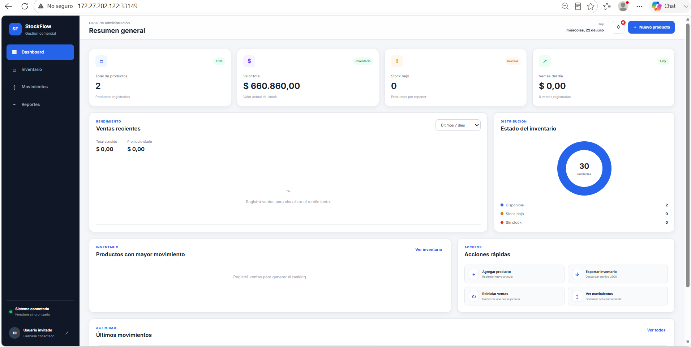
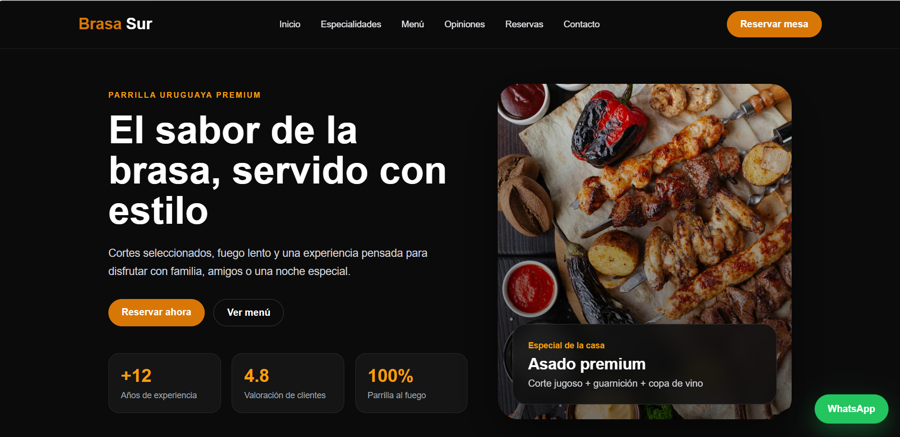

Ubicación
Montevideo, Uruguay
Desarrollo aplicaciones web modernas utilizando HTML, CSS y JavaScript, enfocándome en interfaces limpias, responsivas y funcionales.
Soy un desarrollador Front-End en constante aprendizaje, enfocado en la creación de aplicaciones web utilizando HTML, CSS y JavaScript.
Mi interés por la programación comenzó desde pequeño, impulsado por la curiosidad de entender cómo se creaban las páginas web, las aplicaciones y los programas que utilizaba.
Actualmente continúo ampliando mis conocimientos mediante proyectos personales, con el objetivo de obtener mi primera experiencia profesional, participar en proyectos reales y seguir creciendo como desarrollador.
Montevideo, Uruguay
Remoto · Presencial · Híbrido
Buscando mi primera oportunidad como desarrollador Front-End.
Español · Nativo
Inglés · Intermedio
Portugués · Básico

Sistema de gestión de inventario con autenticación mediante Google. Permite administrar productos, controlar el stock, registrar ventas, consultar estadísticas e historiales, y guardar la información de cada usuario en la nube con Firebase.

Aplicación web para la gestión de turnos que permite registrar, editar y eliminar reservas, evitando duplicados y mostrando únicamente los turnos activos según la fecha y hora.

Landing page moderna para la presentación de un restaurante, desarrollada con una estructura clara, diseño visual atractivo, navegación por secciones y llamados a la acción.
Si querés conocer más sobre mi trabajo o conversar sobre una oportunidad profesional, podés comunicarte conmigo mediante cualquiera de estos medios.
francotechera41@gmail.com
Enviar correoFrancoTechera20
Abrir perfilFranco Techera
Abrir perfilConocé mi perfil profesional.
Descargar CV